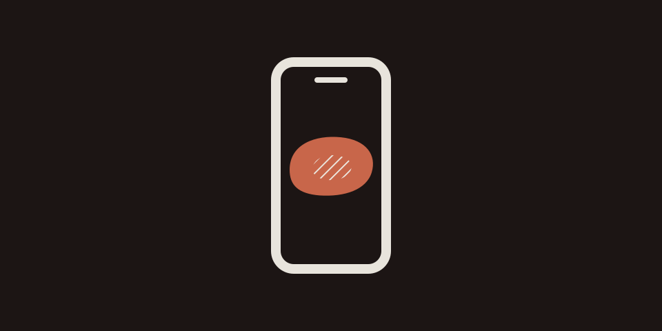

MeatCam
See which parts of your meat are still raw, without relying on color
Overview
MeatCam is an iOS app that helps colorblind people tell whether meat is cooked. Point your camera at the meat and any part that still looks raw is covered with diagonal stripes. Because the main signal is a pattern rather than a color, it works well for people with red–green color blindness.
Features
Raw-looking areas get a light amber tint plus a diagonal stripe pattern. Even if the tint is hard to see, the stripes show you exactly where the meat is undercooked.
Detection goes through the DonenessAnalyzing protocol. For now it uses a simple hue-based heuristic (HeuristicDonenessAnalyzer), and it's designed so a segmentation model trained with Create ML can replace it later.
The camera feed comes in through AVFoundation. MeatCam skips frames and shrinks each one to a coarse grid before analyzing it, so it shows results in real time without draining the battery or overheating the phone.
Source files
MeatCamApp.swift— App entry pointContentView.swift— Main screen (camera feed, stripe overlay and legend)CameraManager.swift— Manages the camera capture sessionDonenessAnalyzer.swift— Decides which areas look rawCameraPreviewView.swift— Shows the camera preview in SwiftUIRawRegionOverlayView.swift— Draws the diagonal stripes
Still in development
MeatCam isn't on the App Store yet. To try it, build the source in Xcode and install it on your own iPhone. Detection is a simple heuristic that hasn't been tuned yet, so it won't always match how cooked the meat really is.